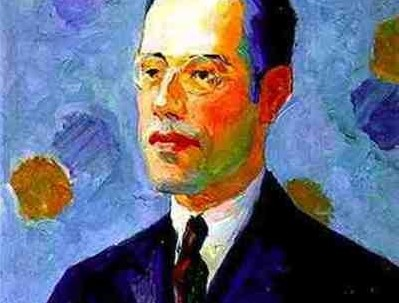

A Intimidade Revelada do Modernismo
A obra Frederico Paciência, escrita por Mário de Andrade, insere-se no contexto do Modernismo brasileiro, movimento literário que marcou o rompimento com as convenções estéticas e temáticas do passado e buscou uma expressão autêntica da identidade nacional. Mário de Andrade, uma das figuras centrais desse período, utilizou sua escrita para explorar as contradições humanas, os conflitos sociais e as complexidades da alma brasileira. Em Frederico Paciência, o autor retrata temas delicados, como a homossexualidade e a solidão, de forma simbólica e introspectiva, revelando sua profunda sensibilidade diante das tensões entre o indivíduo e a sociedade. Assim, a obra reflete não apenas a originalidade estilística e psicológica de Mário, mas também o espírito libertário e questionador do Modernismo.
Sobre a Obra
Frederico Paciência é um conto que integra a coletânea Contos Novos, publicada postumamente em 1947 (depois da morte do autor), e representa uma das fases mais maduras e introspectivas de Mário de Andrade. A narrativa acompanha a vida de Juca (quem narra a história), um estudante relaxado, e sua relação com seu colega Frederico Paciência, um menino sensível, introspectivo, personagem que desperta nele sentimentos de afeto e desejo. A história é marcada por uma linguagem simbólica e por um tom psicológico que revela o conflito interno de Juca diante de seus sentimentos e das imposições morais da sociedade. O enredo, embora simples na superfície, é profundamente carregado de subtextos relacionados à homossexualidade, à repressão emocional e à busca por aceitação. A sutileza com que Mário aborda esses temas, evitando explicitá-los em uma época de forte conservadorismo, faz da obra um retrato tocante da condição humana e da solidão existencial que permeia seus personagens.
Os contos foram escritos no auge do Movimento Modernista no Brasil. Eles nos ajudam entender as ideias, as angústias e os temas que formaram a arte brasileira moderna. Mário de Andrade era uma figura central desse movimento.
De acordo com o que se sabe, esse conto em particular era de grande importância para Mário. O autor levou mais de 20 anos para terminar de escrevê-lo, voltando continuamente na obra para mudar algum detalhe. A maioria dos estudiosos entendem isso como uma evidência de que a narrativa da obra reflete de forma muito pessoal aspectos da vida do próprio autor.
Temas e Intimidade
O conto vai muito além da literatura. Ele mergulha em nuances acerca da vida pessoal, das crises existenciais, da solidão e, notavelmente, de uma profunda afetividade envolvendo o próprio autor.
O Afeto e a "Homoafetividade"
O conto de Mário é marcado por uma ternura e uma intensidade que levantam debates sobre a natureza de sua verdadeira temática. Muitos críticos interpretam a profunda ligação dos personagens como uma expressão de amor homoafetivo, central para a compreensão da sensibilidade da obra.
Embora Mário de Andrade nunca tenha se declarado homossexual publicamente (algo extremamente complexo para a época), a sua obra e correspondências são repletas de uma sensibilidade que dialoga com o desejo e o afeto entre homens.
O Autor
Um pilar do Modernismo brasileiro.
Importância e Legado
Mais do que um documento histórico, "Frederico Paciência" é uma obra viva que continua a gerar debates.
A publicação desse conto foi um marco. Ele não apenas forneceu uma temática completamente inédita para os valores do Modernismo, mas também abriu uma janela crucial para a vida privada de Mário de Andrade, um tema que ele próprio tratou com extremo sigilo durante a vida.
Para os estudos de gênero e sexualidade no Brasil, esta obra é fundamental. Ela permite uma análise da homoafetividade e da expressão do desejo em uma época de intensa repressão social. O conto é um testemunho da complexidade de se "amar" outro homem naquele contexto, ressignificando a figura pública de Mário de Andrade e humanizando-o de forma radical.
Galeria
Imagens que ajudam a contar esta história.
Mário de Andrade em sua juventude
Mário e sua família
Capa de uma das edições
Mário de Andrade junto de outros autores modernistas
Para Saber Mais
Continue sua pesquisa sobre Mário de Andrade, Manuel Bandeira e o Modernismo.